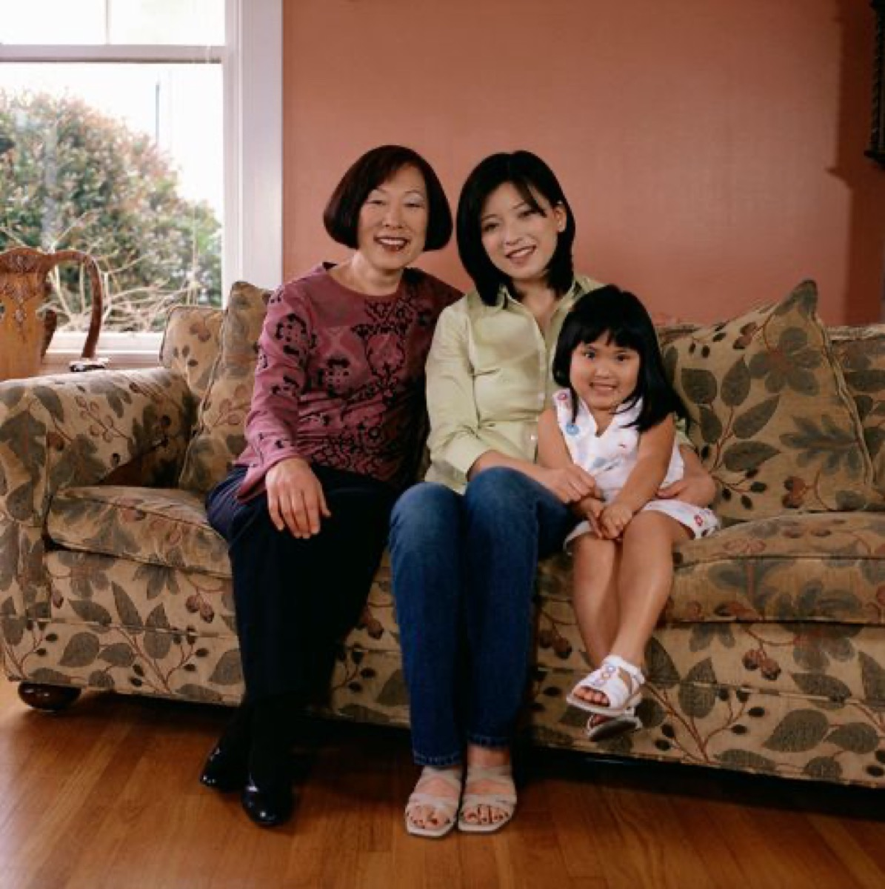

MEMORY MODE
今天适合先听一句熟悉的话，再慢慢把想念带回照片和对话里。

今天适合想起她
声音已建档 18 段
今天的回忆主题
“她总会先问你，今天吃饭了吗？”
适合先听一段声音，再去看看那张你们坐在饭桌边的老照片。
TODAY
今天适合怎么想起她
推荐顺序
先听一句熟悉的叮嘱
“天冷了，记得多穿一点。”这一段只有 26 秒，却最容易一下子把人拉回去。
再看一张饭桌边的照片
那些最普通的画面，反而最容易让人想起“当时没觉得珍贵”的时刻。
最后去平行世界里说一句今天的事
回忆不是只拿来回看，也可以拿来继续说话。
声音
保留问候、叮嘱和笑声，按主题慢慢听。
记忆馆
照片、视频和家书整理成一条人生时间轴。
今天推荐你先看的画面
按情绪排序先看这张饭桌边的照片
很多想念，都是从一顿再普通不过的晚饭开始的。
聊天的时候
像什么都没发生
一起散步
慢慢走的傍晚
今日推荐声音
如果今天只听一段，就先听这个
play_arrow
“天冷了，记得多穿一点。”
节日寄语 · 00:26
纪念日提醒
为想念保留节奏妈妈生日
还有 12 天，适合提前做一张生日回忆卡片
去年今天
那天你们在楼下散步，适合今晚回看那段视频